Split: train · https://coralnet.ai/source/23/
| Source label | Genus | Coral | Pixels |
|---|---|---|---|
| sand and sediment | 5,452 | ||
| dead coral | 3,371 | ||
| seagrass | 2,046 | ||
| sponge | 954 | ||
| macroalgae | 932 | ||
| agariciidae | 561 | ||
| all other | 264 | ||
| cca (crustose coralline algae) | 258 | ||
| transect hardware | 252 | ||
| octocorallia | 249 | ||
| montastrea franksi | 216 | ||
| other scleractinians | 158 | ||
| siderastrea siderea | siderastrea | yes | 96 |
| mobile invertebrates | 77 | ||
| meandroid (brain) corals | 24 | ||
| stephanocoenia michellini | stephanocoenia | yes | 24 |
| non-bio | 20 | ||
| montastraea cavernosa | montastraea | yes | 18 |
| porites astreoides | porites | yes | 16 |
| millepora | millepora | 12 |
Each point is one annotation, colored by source label. Colors match the source label chart above.
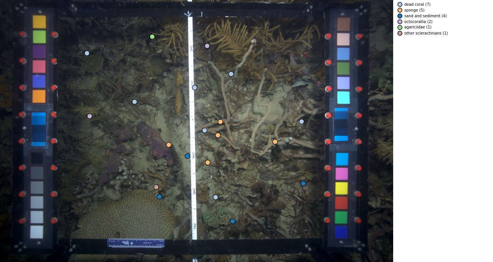
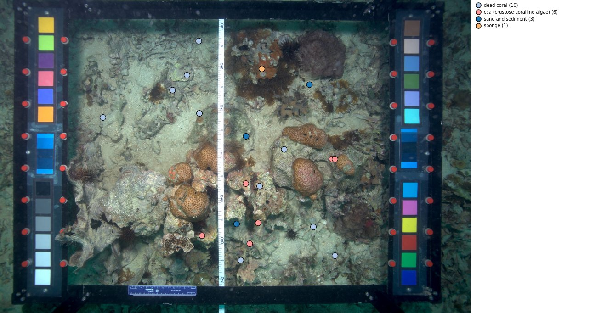
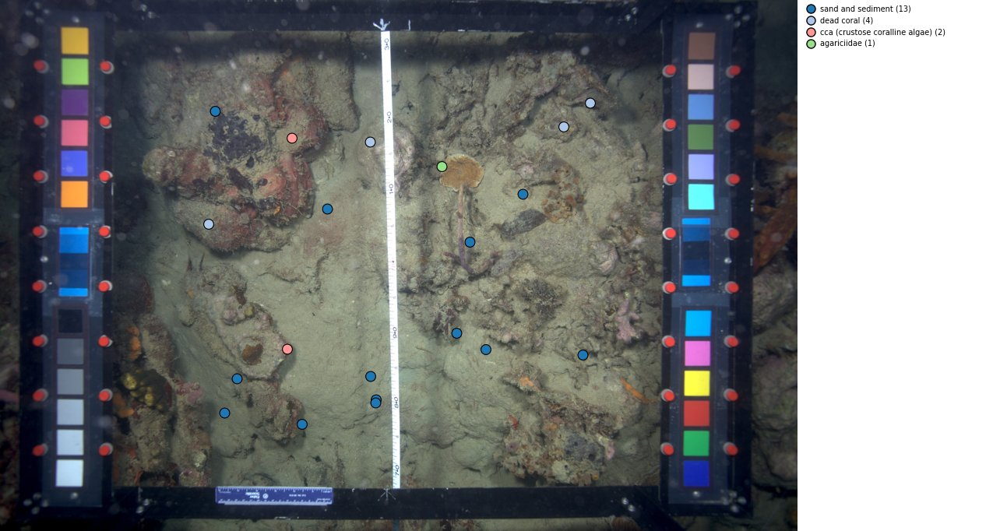
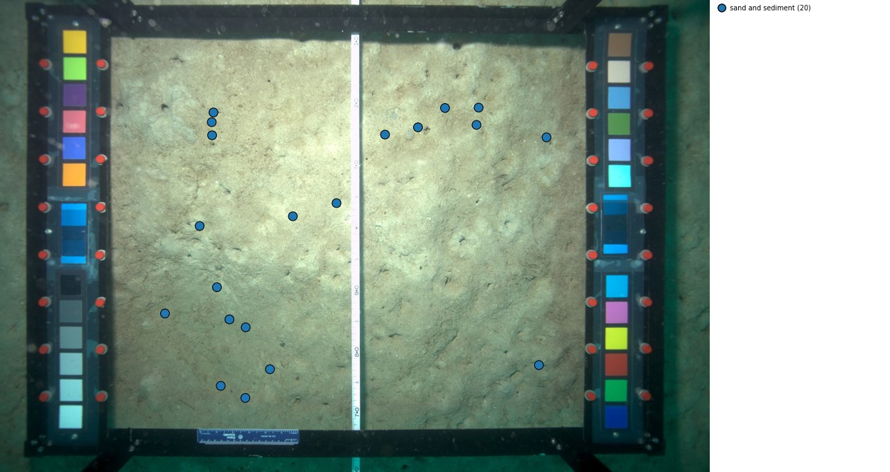
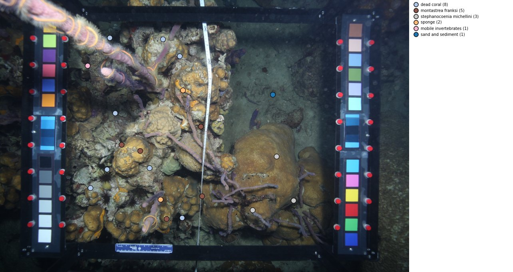
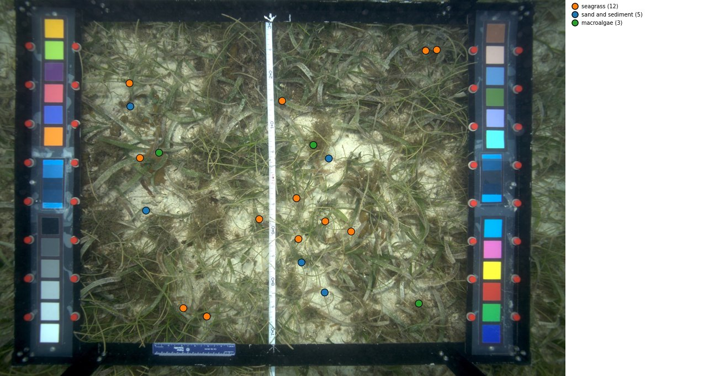
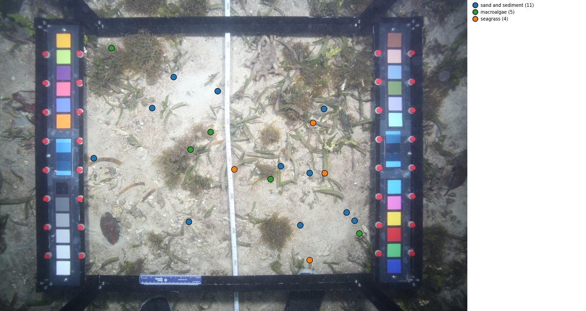
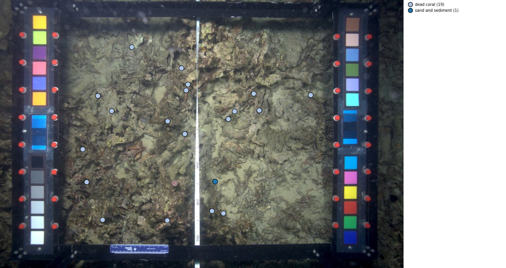
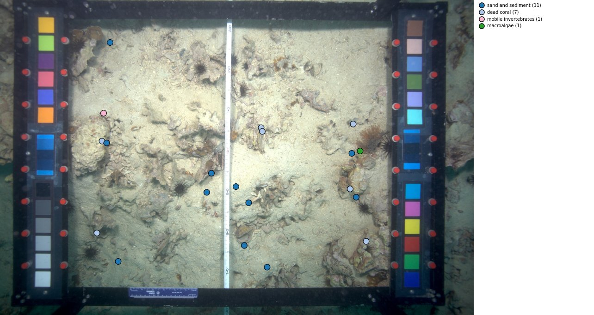
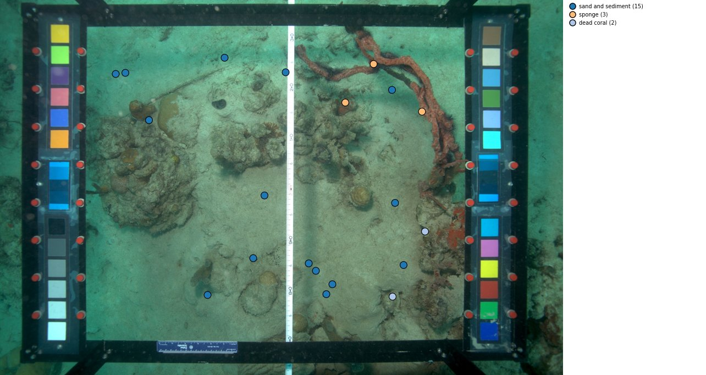
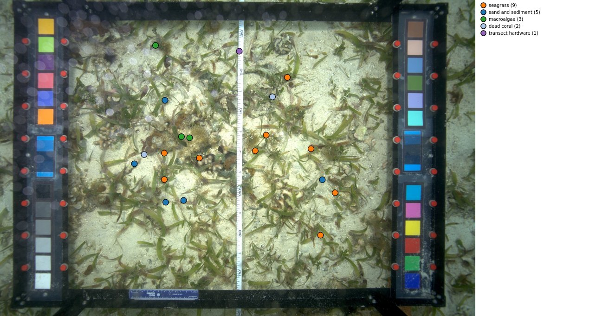
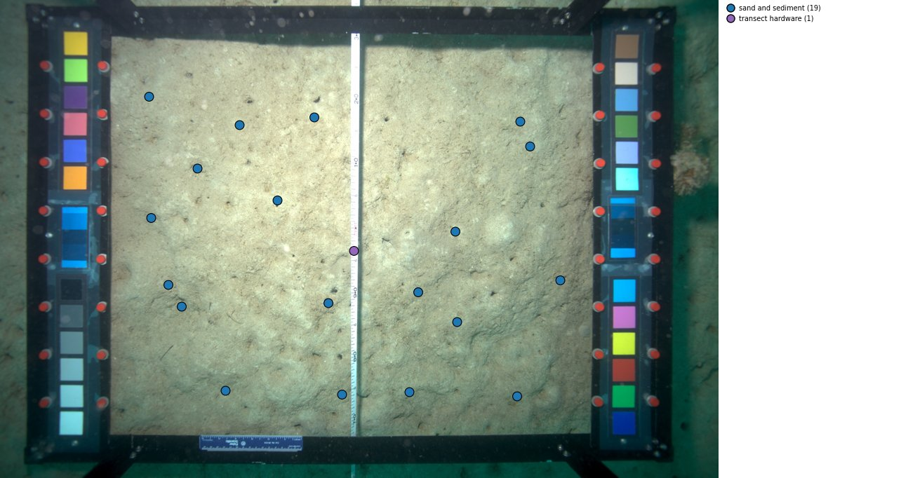
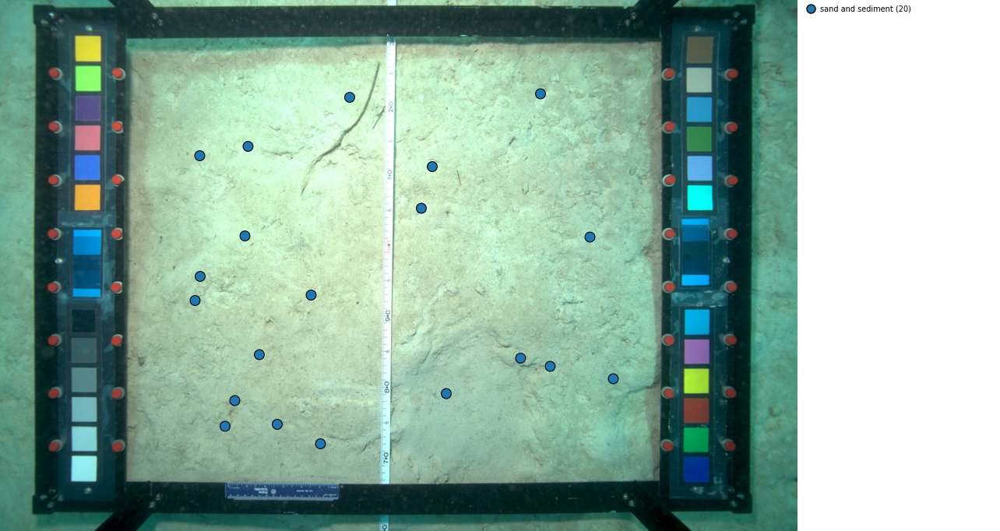
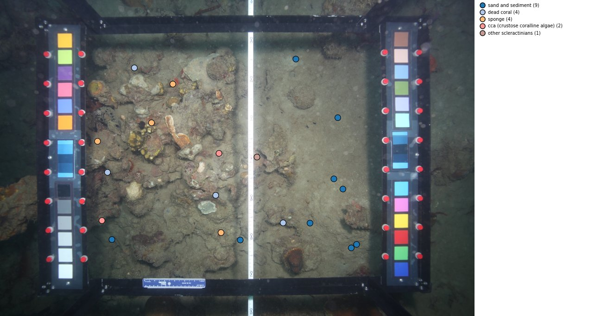
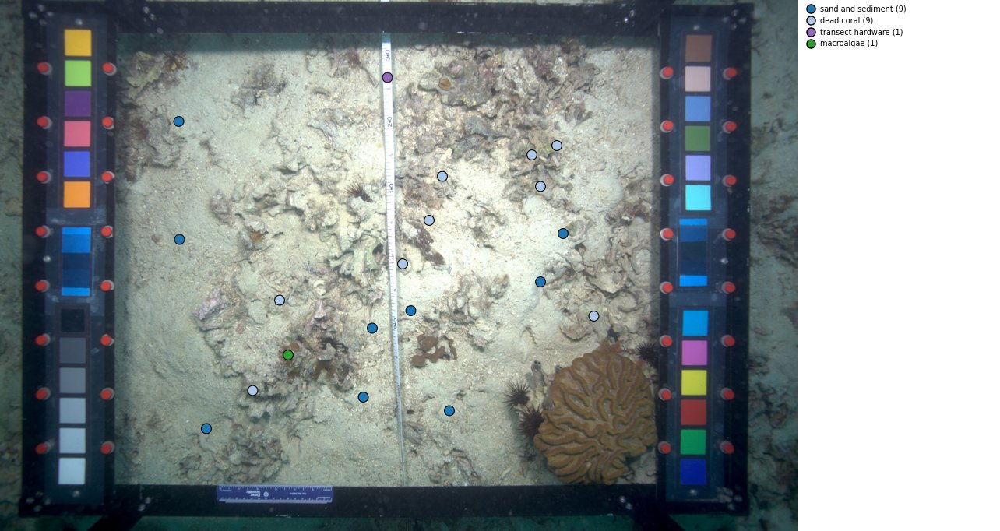
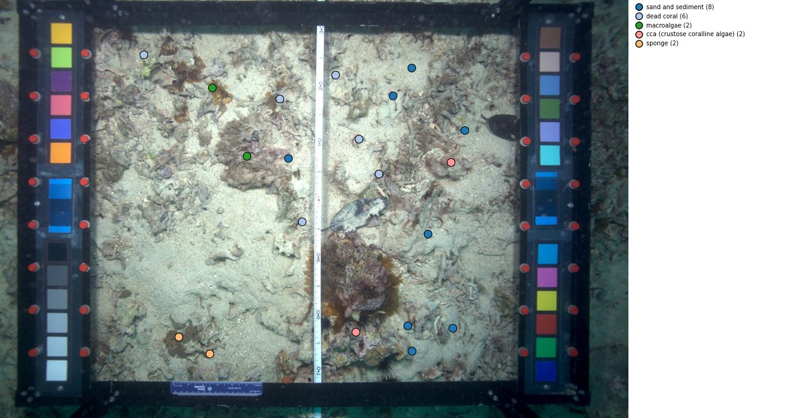
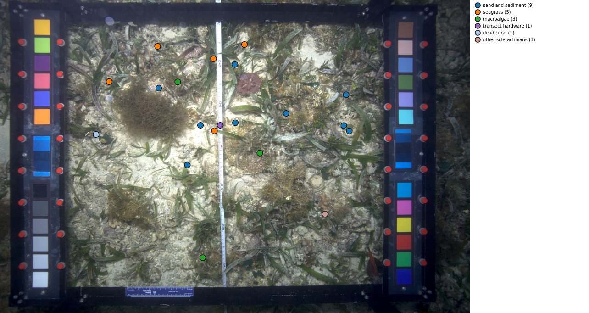
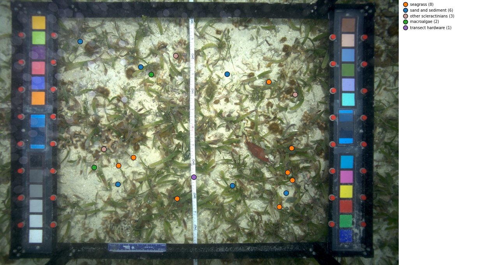
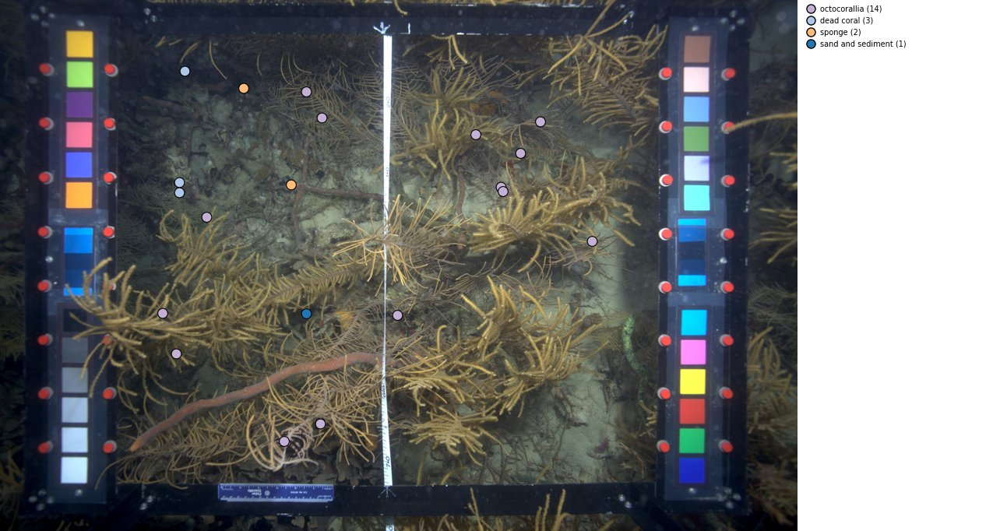
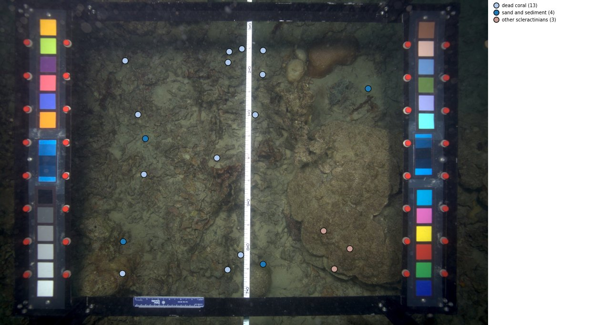